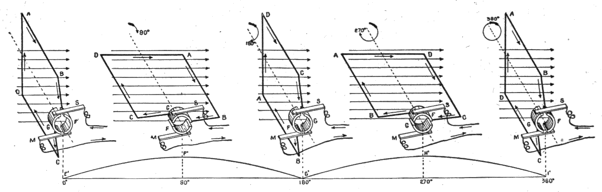

Figs. 174 to 178.—Commutation of the current.
These figures show how a dynamo transforms alternating into the so-called
direct current. During the first half of the revolution the current flows
in the direction A B, out through segment F of the commutator and brush M,
returning through brush S and segment G, figs. 174 and 175. At the
beginning of the second half of the revolution, fig. 176, the current in
the armature reverses and flows around the loop in the direction B A. At
this instant the brushes M and S pass the gaps between the commutator
segments, thus reversing contact with the segments, and causing the
current in the external circuit to remain in the same direction.